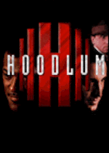
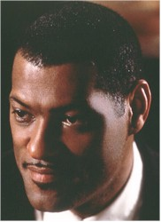

Contents | Features | Reviews | News | Archives | Store |
 |
|
| Movie Credits | Buy It! |
Hoodlum
Review by Carrie
Gorringe
Posted 29 August 1997
|  | Directed by Bill Duke Starring Laurence Fishburne, Screenplay by Chris Brancato |
At its very heart, Hoodlum is a film about dishonesty, a dishonesty not restricted to the desire of Dutch Schultz (Roth) and Charles "Lucky" Luciano (Garcia) to control the numbers racket in Harlem during the 1930s by any means available. No, the real speciousness comes from the film’s desire to rewrite history in the most shameless fashion to suit God knows what purpose, although the two main contenders are political correctness and/or a need to distort facts to keep the plot from falling into redundancy.
Briefly put, history records that the Italian Mafia, after a brief and bloody power struggle during the early 1930s, was fashioned into an efficient unit (comprising five families which divided up all of the territory in New York (check)) that answered to Luciano. This unit then embarked on what might politely be deemed a takeover of the vices still controlled by the remaining Irish, Jewish and African-American gangs. With ethnic cohesiveness, lots of cash from Prohibition bootlegging, and few scruples about using violence on their side, the Italian gangsters achieved their aims by the mid-‘30s – just in time for Luciano to head for a stretch in Dannemora prison on a trumped-up prostitution charge and eventual deportation from the United States. Luciano’s travel plans were the result of the efforts of one ambitious and mob-loathing D.A. ,Thomas Dewey. Even Luciano’s influence over the dockworkers’ unions during World War II to prevent the infiltration of foreign spies (he also arranged for the Sicilian Mafia to facilitate the 1944 Allied landings in Sicily) wasn’t enough to buy him succor from Dewey. Dewey, now Governor of new York State and well on his way to securing the 1948 Republican presidential nomination, wasn’t about to jeopardize his political future to keep a promise to someone who wasn’t good at keeping promises himself . In the battle of ambition versus ambition, Luciano lost heavily; he spent the rest of his life in Italy, always homesick for America. Only in death – when he couldn’t do any more harm – was Luciano allowed to return, but, like Caesar, whatever good he did was buried with him.
 Hoodlum,
however, would have us believe that Dewey (Atherton) was a corrupt official who
wasn’t reluctant to accept a well-equipped suitcase of payoff money, and that Dutch
Schultz’s reign of terror over Harlem lasted until 1937, when the victorious Harlem
factions won out (in fact, Schultz was murdered in 1935 on Luciano’s orders because
Schultz wanted to assassinate Dewey, a move which other mobsters feared would be fatal to
their health). The last thing that Luciano feared was the movement uptown of ballsy Harlem
numbers runners like Stephanie St. Clair (Tyson) or her associate, "Bumpy"
Johnson (Fishburne); white government officials scared him (if anyone could scare him) far
more. Even if an individual like Bumpy had managed to carve out a niche for himself
against Luciano, the deal would have cost him heavily in terms of monthly tribute.
Admittedly, the film does initially emphasize the risk that Johnson and his compatriots
are taking, but the optimistic conclusion it provides is shamefully dishonest.
Hoodlum,
however, would have us believe that Dewey (Atherton) was a corrupt official who
wasn’t reluctant to accept a well-equipped suitcase of payoff money, and that Dutch
Schultz’s reign of terror over Harlem lasted until 1937, when the victorious Harlem
factions won out (in fact, Schultz was murdered in 1935 on Luciano’s orders because
Schultz wanted to assassinate Dewey, a move which other mobsters feared would be fatal to
their health). The last thing that Luciano feared was the movement uptown of ballsy Harlem
numbers runners like Stephanie St. Clair (Tyson) or her associate, "Bumpy"
Johnson (Fishburne); white government officials scared him (if anyone could scare him) far
more. Even if an individual like Bumpy had managed to carve out a niche for himself
against Luciano, the deal would have cost him heavily in terms of monthly tribute.
Admittedly, the film does initially emphasize the risk that Johnson and his compatriots
are taking, but the optimistic conclusion it provides is shamefully dishonest.
All of these polarized and distorted historical elements result in clearly-defined characterizations, but also burdens the film with a reliance upon insidious reverse stereotyping. Thus, the audience is treated to the spectacle of noble African-Americans fighting irremediably scummy Italians and Jews. How can you find fault with a group of individuals who see preying upon their own as a form of social welfare especially when Bumpy’s assistant, Illinois Gordon (McBride), sanctimoniously assures the audience that one good payoff on a numbers game could buy a month’s worth of groceries in Depression money? It’s very simple: look at the wealth accrued by Mme St. Clair, who, before being framed, lives in opulent Art Nouveau splendor (there were a few Tiffany lamps scattered around her main living room), while the people who desperately play the numbers live in squalor. His protestations to the contrary, Bumpy Johnson’s exclusive interest lies with Bumpy Johnson. One unfortunate conclusion becomes apparent to anyone with eyes to see: no matter the color of the numbers runners, the only victims in Harlem are the poor blacks, who end up in the red every day of their miserable lives.
 Hoodlum
reluctantly acknowledges the rampant poverty in 1934 Harlem, and the corruption of the
numbers racket therein, but quickly sweeps these rather uncomfortable facts under the
Aubusson rug, while allowing our eyes to feast on the attraction between Fishburne and
Williams (only the latter half of this pairing is compelling) and the tattered remnants of
a potentially exciting robbers-and-robbers tale, too burdened with its own mendacity to
become anything other than a tepid melodrama. Even the more violent scenes, shot in the
quick, disjointed editing style so common these days as to become its own cliché,
inspires only boredom and the hope that they will be dispatched with the same swiftness of
the thugs involved (unfortunately, the audience isn’t that fortunate). Attempting to
dress up this decomposing cinematic corpse in the artificialities of designer history
leaves Hoodlum also very much in the red – in terms of a lack credibility, its
waste of talent, and the monotony that the filmmakers substitute for real dramatic
tension. Director Bill Duke, who also made the uneven, but much more entertaining, A
Rage in Harlem, should have known better than to try his hand at this attempt to
tiptoe through American history with all the subtlety of someone wearing hobnail boots.
Audiences, however, will probably get wise to Hoodlum’s multiple-level
betrayal and take its box-office receipts for a ride.
Hoodlum
reluctantly acknowledges the rampant poverty in 1934 Harlem, and the corruption of the
numbers racket therein, but quickly sweeps these rather uncomfortable facts under the
Aubusson rug, while allowing our eyes to feast on the attraction between Fishburne and
Williams (only the latter half of this pairing is compelling) and the tattered remnants of
a potentially exciting robbers-and-robbers tale, too burdened with its own mendacity to
become anything other than a tepid melodrama. Even the more violent scenes, shot in the
quick, disjointed editing style so common these days as to become its own cliché,
inspires only boredom and the hope that they will be dispatched with the same swiftness of
the thugs involved (unfortunately, the audience isn’t that fortunate). Attempting to
dress up this decomposing cinematic corpse in the artificialities of designer history
leaves Hoodlum also very much in the red – in terms of a lack credibility, its
waste of talent, and the monotony that the filmmakers substitute for real dramatic
tension. Director Bill Duke, who also made the uneven, but much more entertaining, A
Rage in Harlem, should have known better than to try his hand at this attempt to
tiptoe through American history with all the subtlety of someone wearing hobnail boots.
Audiences, however, will probably get wise to Hoodlum’s multiple-level
betrayal and take its box-office receipts for a ride.
Contents | Features | Reviews | News | Archives | Store
Copyright © 1999 by Nitrate Productions, Inc. All Rights Reserved.